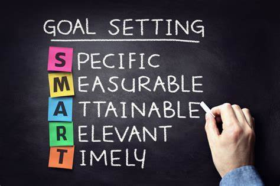

GOAL SETTING
First consider what you want to achieve, and then commit to it. Set SMART (specific, measureable, attainable, relevant and time-bound) goals that motivateyou and write them down to make them feel tangible. Then plan the steps you must take to realize your goal, and cross off each one as you work through them. Goal setting is a powerful process for thinking about your ideal future, and for motivating yourself to turn your vision of this future into reality. The process of setting goals helps you choose where you want to go in life. By knowing precisely what you want to achieve, you know where you have to concentrate your efforts. You'll also quickly spot the distractions that can, so easily, lead you astray.
